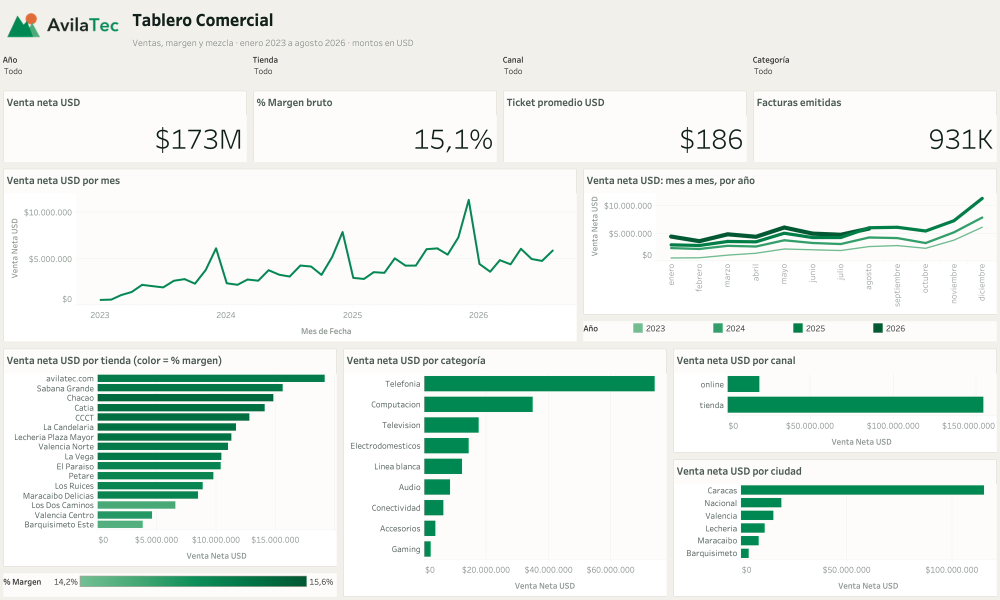
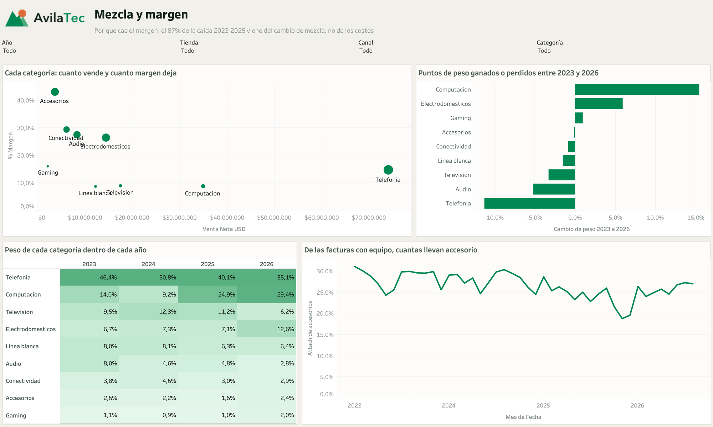
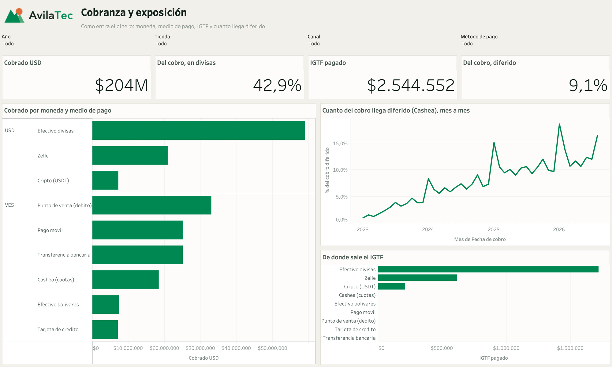
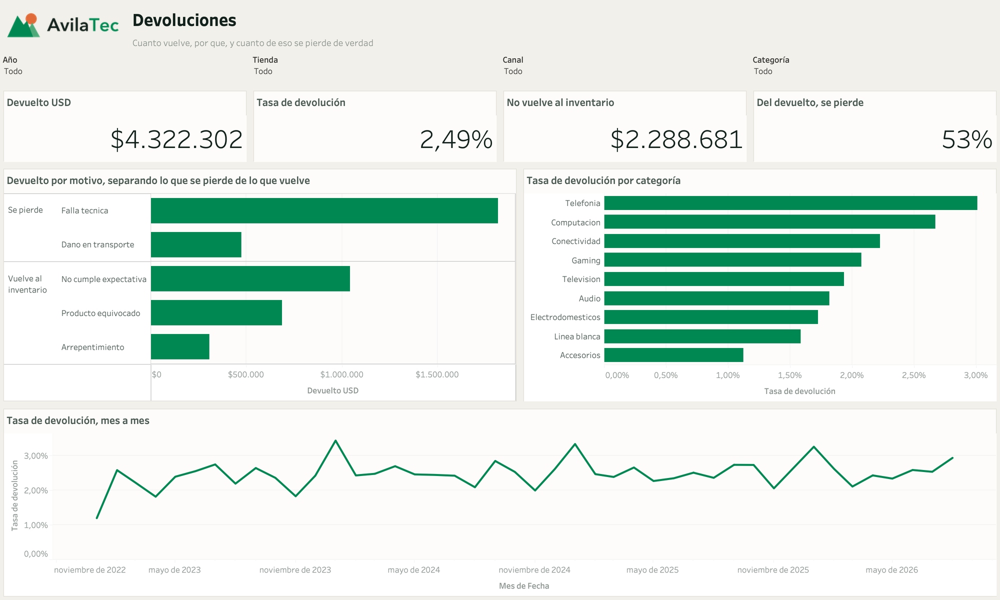
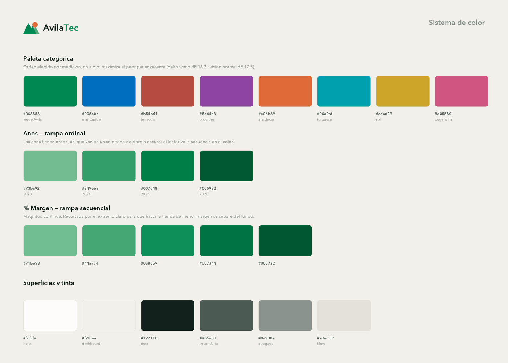

Inicio · Proyectos · Tablero Comercial
AvilaTec · Tableau
Tablero Comercial
Cuatro pestañas sobre 1,6 millones de líneas de factura. Responden en este orden: cómo va la venta, por qué se cae el margen, cómo entra el dinero y cuánto vuelve por la puerta. El workbook no se armó a mano: se genera por código.
- Rol
- Modelo de datos, análisis y diseño del tablero
- Herramientas
- Tableau Desktop · Hyper · Python · SQLite
- Grano
- Línea de factura · 1.609.748 filas
- Período
- ene 2023 → ago 2026

assets/js/config.js.
El punto de partida
Una sola tabla plana, a propósito
La fuente es Extract.Ventas, un extracto Hyper a grano de línea de
factura. Un único grano evita el fan-out de las medidas: en cuanto se unen ventas y
cobros en la misma tabla, cada importe se multiplica por el número de filas del otro
lado y todos los totales quedan inflados sin avisar.
El precio de esa decisión es explícito: las metas mensuales quedan fuera del tablero
porque viven a otro grano (tienda × mes). Cobros y devoluciones tampoco se mezclan —
cada uno tiene su propia fuente dentro del mismo .hyper.
Once campos calculados, diez hojas y un dashboard de 1500×900. Sin filtros: $173.400.935 de venta neta, 15,1 % de margen, ticket de $186 y 931.413 facturas. Esos cuatro números son el control: si tras un cambio no cuadran, el cambio está mal.
Las cuatro pestañas
| Pestaña | Qué pregunta responde | El hallazgo |
|---|---|---|
| Tablero Comercial | Cómo va la venta | KPI, tendencia, comparativo anual, ranking de tiendas y mezcla por categoría, canal y ciudad |
| Mezcla y margen | Por qué cae el margen | −1,64 pp entre 2023 y 2025, y el 87% viene del cambio de mezcla, no de costos ni descuentos |
| Cobranza y exposición | Cómo entra el dinero | El cobro diferido pasó de 3,35% a 13,29%: se cuadruplicó en tres años |
| Devoluciones | Cuánto vuelve y cuánto se pierde | Tasa de 2,49%, pero 53% de lo devuelto no vuelve al inventario |


.hyper.
El margen no se cayó por lo que parecía
La caída de 1,64 pp del margen bruto tiene una explicación tentadora — costos o descuentos — y es falsa. Descomponiendo la variación, solo −0,22 pp vienen de que las categorías perdieran margen propio; −1,42 pp vienen de que se vende otra cosa. Computación ganó 15,4 pp de peso con apenas 8,3% de margen, mientras Telefonía perdía 11,3 pp.
La palanca operativa que salió de ahí es el attach de accesorios: de las facturas con equipo, cuántas se llevan un accesorio. Cayó de 27,98% a 23,07% y se recuperó a 25,86%, con las líneas por factura clavadas en 1,73. No es que el carrito encogiera: es que dejaron de agregar el accesorio.
Dos cifras que se confunden en cobranza
El 24% de los cobros son cuotas, pero eso es solo el 9,1% del monto: son muchos cobros pequeños. Para capital de trabajo importa la segunda. El tablero muestra las dos juntas justamente para que nadie cite la que no es.
Diseño
El color no es decoración
La paleta se derivó en OKLCH y el orden de los slots no es estético: es el mecanismo de seguridad para daltonismo. Se enumeraron órdenes y se eligió el que maximiza el peor par adyacente — dE 16,2 bajo protanopia y deuteranopia, holgado sobre el piso de 8.
- Los años son ordinales, no categorías sueltas: van en una rampa de un solo tono, de claro a oscuro, para que el orden se vea en el color.
- El comparativo anual codifica el año dos veces, por tono y por grosor de línea. El grosor sobrevive intacto al daltonismo, así que el año en curso se distingue aunque el tono no se perciba.
- El signo lo lleva la dirección de la barra, no un segundo color. Así el tablero sigue siendo monocromo sin perder el «ganó / perdió».
- Las barras de una sola serie van todas en el verde de marca. Colorearlas por su valor gasta el canal de identidad repitiendo lo que ya dice el largo de la barra.
La alternativa habitual —años viejos en gris, el actual en color— se descartó midiendo: aclarando los grises lo justo para que un daltónico separe el verde de 2026 del gris de 2025, el gris más claro cae a 1,81:1 contra el fondo. No hay banda de luminosidad para tres grises más un verde.

Construcción
El workbook se escribe, no se arrastra
Un .twb es XML. Todo el tablero —fuente de datos, campos calculados,
hojas, dashboard, estilos— se genera desde Python, así que rehacerlo entero es un
comando y cualquier cambio queda versionado como texto.
python3 construir_hyper.py # extracto Hyper desde Parquet
python3 construir_logo.py # el logo, en los colores de la paleta
python3 construir_twb.py # el workbook .twb (XML)
python3 empaquetar.py # .twb + .hyper + logo -> .twbx
Lo caro de este camino es el diagnóstico: Tableau valida el XML con dureza y
enmascara el error en el log (error-details=["*****"]),
así que un archivo mal formado solo produce «no fue posible finalizar la carga». El
diálogo de error de la aplicación, en cambio, lo muestra entero, con número de línea
y hasta el modelo de contenido esperado. Capturar ese diálogo automáticamente fue lo
que hizo viable el ciclo.
El fallo silencioso es peor que el rechazo. Una regla de estilo válida cuyo campo o valor no casa se ignora sin avisar. Como la paleta continua por defecto de Tableau es azul, una rampa azul ignorada se parece muchísimo a una rampa azul aplicada. La única comprobación honesta es medir el píxel del render.
Y ahora, qué viene
El tablero cierra la pregunta de qué pasó. La siguiente es qué va a pasar.